01 ReBox App Design
This all began as a project for a 24 hour hackathon, however, 24 hours wasn’t enough for me. I really wanted to fully flush out the project and go full UX designer on the idea. Here’s where I ended up.
Role
UX/UI Design, Prototyping, Usertesting, Competitive Analysis
Duration
6 weeks (February-March 2019)
Part-Time
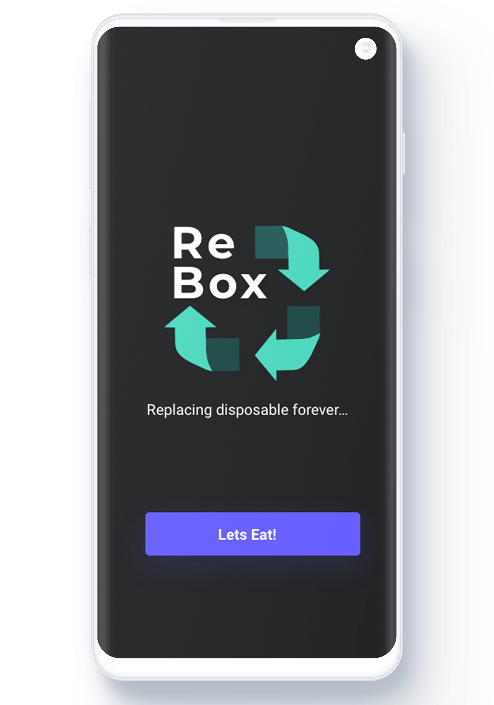
Ideation Process: The Hackathon
At XD Hacks that took place at the University of British Columbia February 9-10 2019, my team and I took task of tackling current problems facing the Global Resources & Foods Path. We came up with the idea of tackling the disposable container problem as it is extremely prevalent in Vancouver.
My Team
Brian Cheng - UX Designer and GIS Specialist
Jasmine L - Biology Majoy at UBC
What we achieved after 24 hours
Brian made this in 3 hours, he also did all of the prototyping to display our protoype to the judges (pretty impressive!). Check out his work at designsbybrian.ca
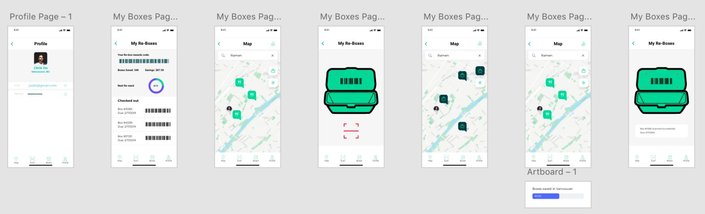
I made the onboarding, logo, and worked on the slide deck with Jasmine
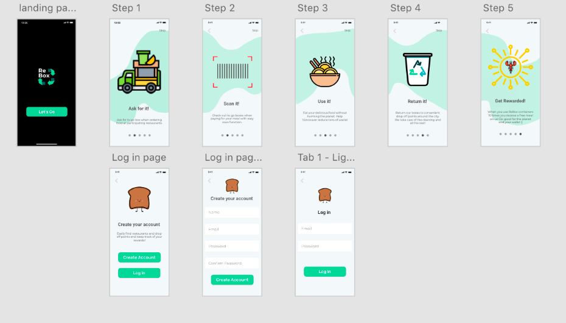
Jasmine researched the feasibility of the project nd created an implemenation plan that we pitched to the judges.
After the 24 hour hackathon period, I was super stoked on the idea and decided to take it to the next level by implementing user research and stronger visual design.
Step 1: Survey's and Interviews
In order to get to know my users better I created a survey with 20 respondents and conducted interviews with 5 individuals. I find this to be a good jumping off point for user research as it gives you some idea towards general tendencies and opinions. It allowed me to focus my efforts on delving into users habits on a much narrower scope. The general things that I was trying to identify was who ReBox’s users were; their habits, age, motivations, core needs and pain points. Ultimately this phase helped me figure out what my early adopter target market looked like.

 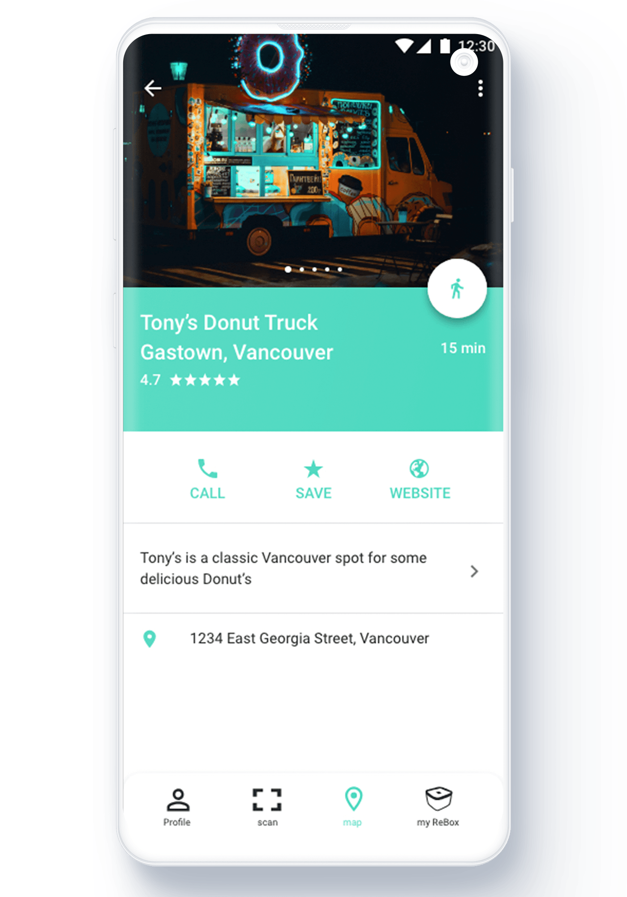
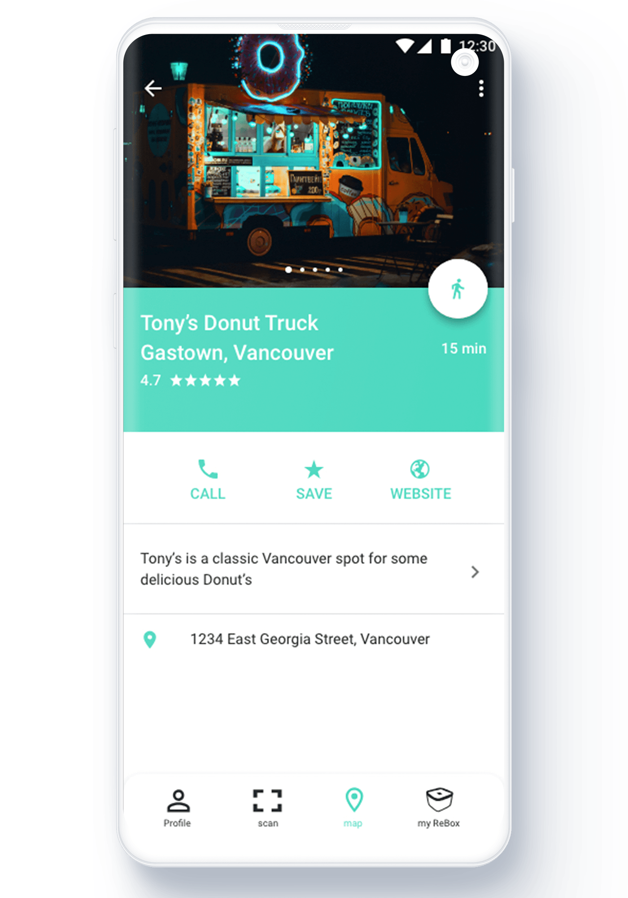
 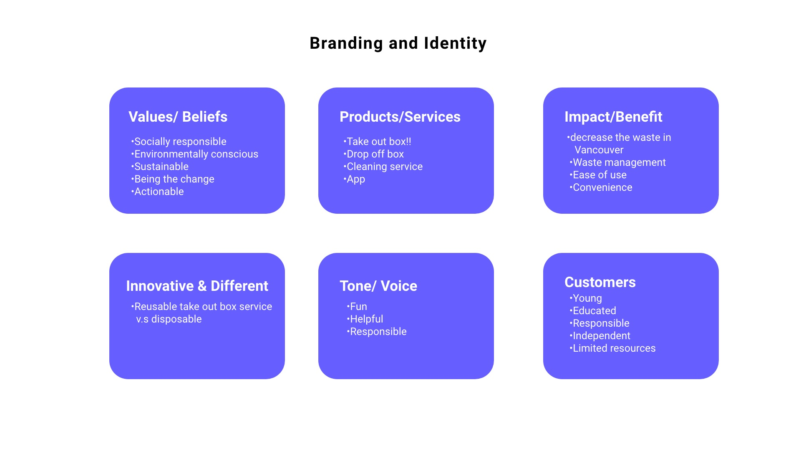
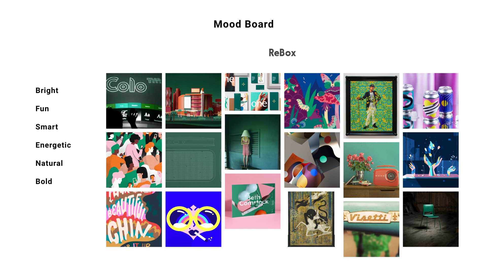
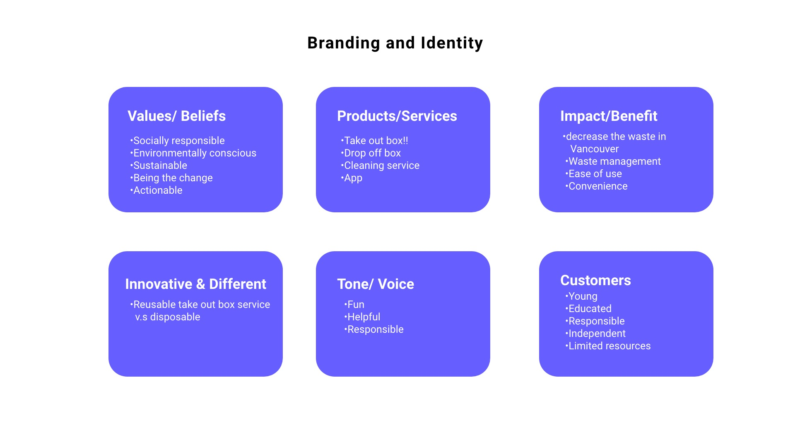
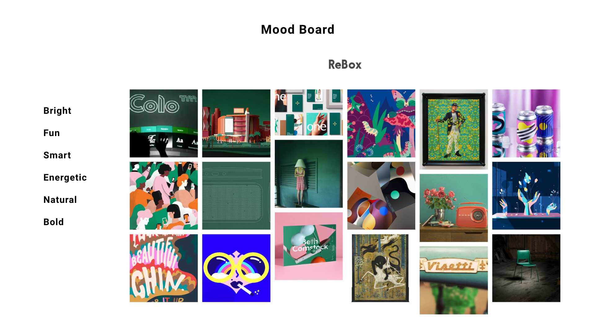
 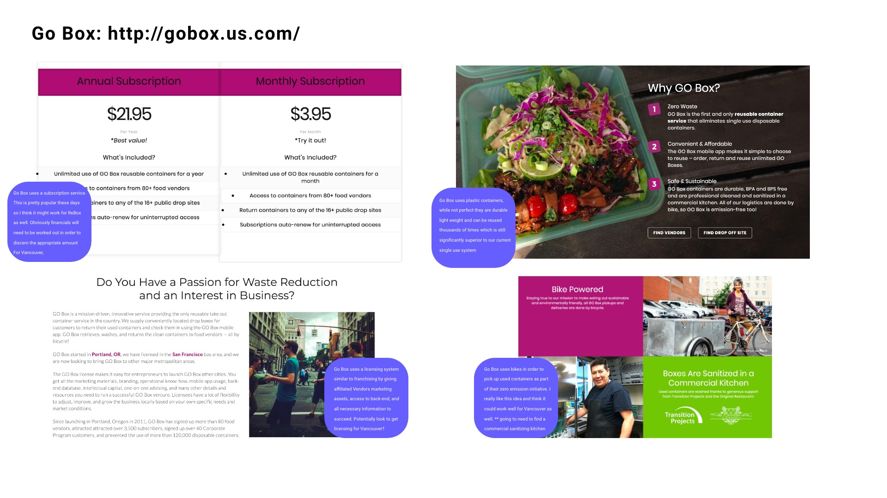
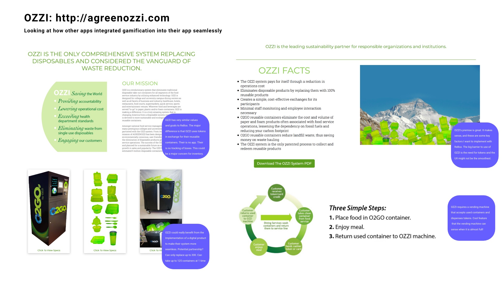
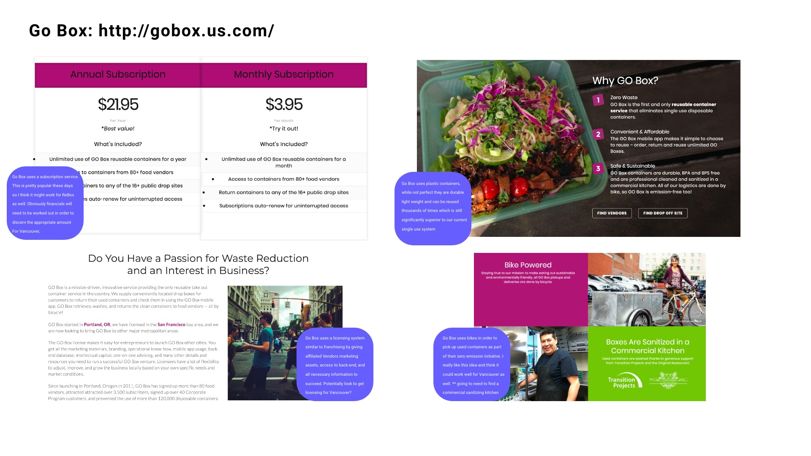
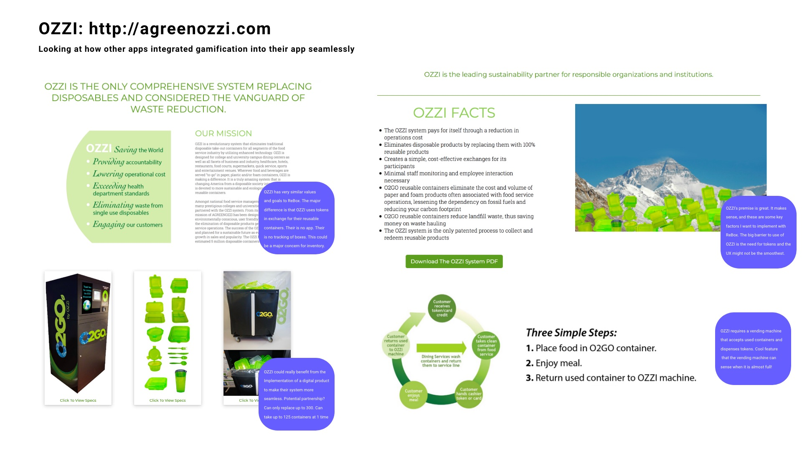